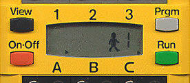

|
|
Start of Tutorial > Start of Trail |

When viewing the upper side of the RCX there are four buttons to be detected:
As with most of the hardware related leJOS classes, these three buttons are implemented
as static fields of the static
Another possibility to access the buttons is via the
static
The easiest way to achieve this is the use of the
After all, in most cases it isn't convenient to stop execution until the user releases a button, but
you might want to be notified when such an event happens while the program is running.
If you are unfamiliar with event listeners, feel free to consult the
section of The Java Tutorial™ in question.
Button class:
The reason for this should be clear: there IS actually only one RUN button on the RCX, so it
wouldn't make much sense to create more than one instance of it.
Button[] array, which contains the VIEW, PRGM and RUN button, in this order.
Detecting when a button is pressed (and maybe even released)
The main (and eventually the single) interaction the developer of leJOS programs is interested in
when referring to buttons is the event, when a user presses the button and
- maybe even more important - when he releases it.
waitForPressAndRelease()
method. When calling it, the program (or to be more precise, the actual thread) will wait until
the user presses and releases the button:
You will notice that you have to catch the InteruptedException the method (in fact the underlying thread
method) may throw.
try {
Button.RUN.waitForPressAndRelease();
} catch(InterruptedException e) {
// maybe do something here
} // catch()
In leJOS, for such cases you will use Java's wonderful event listener technology:
Your class to listen for such a button event will implement the two methods
of the josx.platform.rcx.ButtonListener interface.
Now you are able to add this class as a listener to the button in question:
public class MyButtonListener implements ButtonListener {
public void buttonPressed(Button b) {
// maybe do something here
} // buttonPressed()
public void buttonReleased(Button b) {
// maybe do something here
} // buttonReleased()
} // class MyButtonListener
Every time the RUN button is pressed or released, the according methods of the
Button.RUN.addButtonListener(myButtonListener);
MyButtonListener will be called.
A complete example which uses the Button class
is PerformanceTest.java which may be found in the examples/performance_test
section of the leJOS tree.
The Button API
may be found here.
The leJOS Tutorial
Start of Tutorial
>
Start of Trail